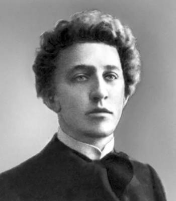

Опять, как в годы золотые,
Три стертых треплются шлеи,
И вязнут спицы росписные
В расхлябанные колеи...
Россия, нищая Россия,
Мне избы серые твои,
Твои мне песни ветровые, —
Как слезы первыя любви!
Тебя жалеть я не умею,
И крест свой бережно несу...
Какому хочешь чародею
Отдай разбойную красу!
Пускай заманит и обманет, —
Не пропадешь, не сгинешь ты,
И лишь забота затуманит
Твои прекрасные черты...
Ну, что ж? Одной заботой боле —
Одной слезой река шумней,
А ты всё та же — лес, да поле,
Да плат узорный до бровей...
И невозможное возможно,
Дорога долгая легка,
Когда блеснет в дали дорожной
Мгновенный взор из-под платка,
Когда звенит тоской острожной
Глухая песня ямщика!..